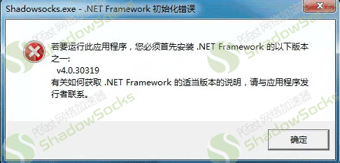
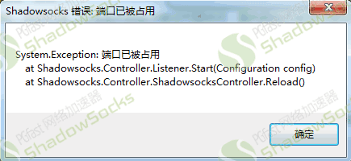
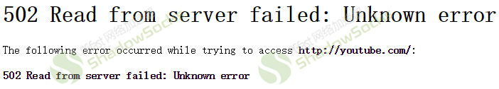
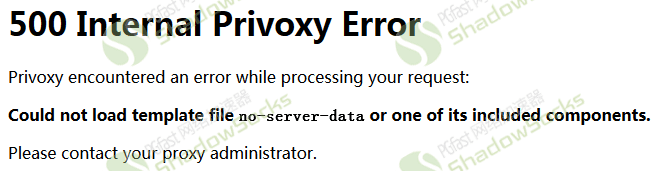

windows系统电脑使用不正常请参考下面的解决方法：
一、客户端打不开
初始化错误无法打开运行客户端，例如打开的时候出现下图

请下载.net 40 framework安装后即可，下载地址http://www.crsky.com/soft/6959.html#down 或自行百度搜索关键词“.net40”下载安装。
打开客户端提示端口被占用，例如下图：

请检查是否已经打开客户端后重复打开导致，客户端打开后会在屏幕右下角显示一个飞机图标，有可能会被隐藏在小三角内，注意查看，客户端只能打开一次。
二、打开网页慢、打不开国外网站、打开网页显示502、500错误如下图


检查是否按照使用教程（json文件自动配置）这个教程步骤安装设置正确，客户端打开后会在右下角有一个飞机图标，在图标上点击右键--服务器--会看到很多已经设置好的服务器，如果没有，请重新按照教程使用教程（json文件自动配置）操作。
2尝试更换服务器连接，右键点击屏幕右下角的飞机图标---服务器---选择服务器，然后重启浏览器或shadowsocks客户端，再尝试打开网站看是否可以。
3右键点击屏幕右下角的飞机图标查看“启用系统代理”前面是否打勾，如果没有，勾上。
4浏览器内不要安装任何代理相关的插件，例如红杏、autoproxy、proxysharp等等，只禁用插件并无效，需要删除插件，另外跳过视频广告类的插件也会导致出现问题例如视频广告终结者等，需要删除。
5检查浏览器的网络设置项目里面的代理设置，看是否是使用系统代理或使用ie代理，如果不是，设置为使用系统代理或使用ie代理。
6检查c:\windows\system32\drivers\etc目录内的hosts文件内是否有增加的条目，如果有，删除，重启电脑。
7确保没有运行其他任何跟代理相关的软件程序或插件等。
三、某些软件无法使用代理
1、Android SDK、ADT无法下载、升级：
shadowsocks客户端内代理模式选择全局
SDK Manager内打开Tools---Options选项，
代理里面设置IP填写：127.0.0.1端口填写：8123
2、dropbox客户端无法使用：
打开dropbox客户端首选项---代理
代理服务器设置：选择“手动”
代理服务器类型：选择“SOCKS5”
服务器填写：127.0.0.1端口1080